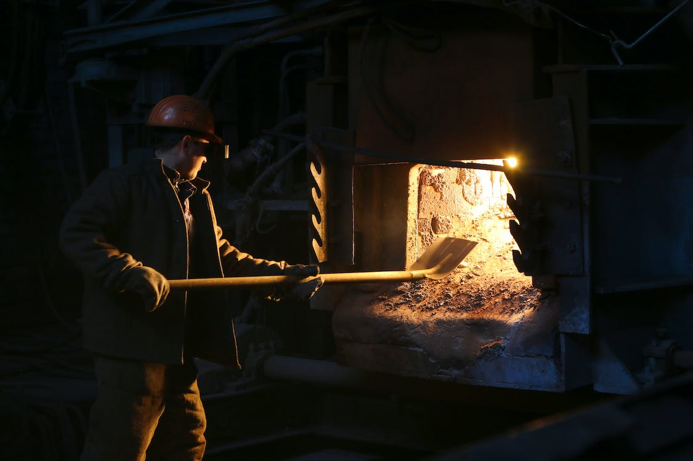

Freighter Jobs
As a part of your "free" transportation, there are various jobs that one must perform in order to earn their "free" ride
Coal Trimmer
- Also known as a stoker, this position requries you to shovel coal into the furnace in order to generate steam to power the shipthis job can be dangerous due to inhaling toxic fumes and risk of burning. This position is only necessary if the ship is steam powered.